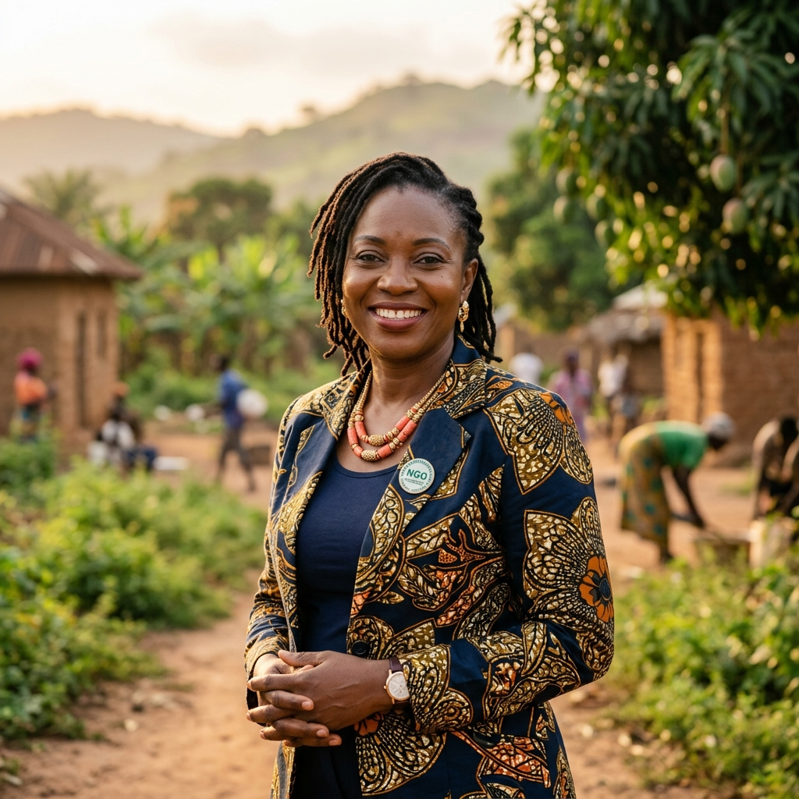
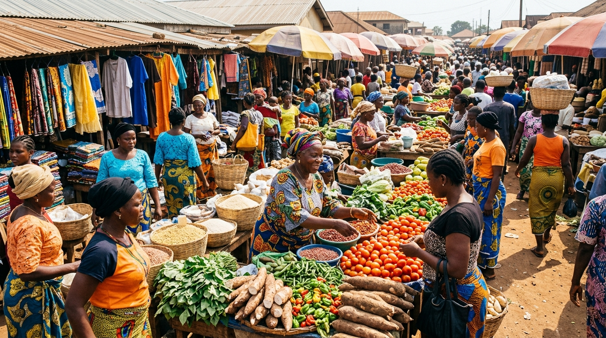

Home / About Us
An institution built for lasting, local prosperity.
GIDA bridges cutting-edge science, market systems engineering, and community-led execution, as an incorporated Company Limited by Guarantee dedicated to public impact.
Organization profile
Legal status & mandate
Growth Innovation for Development Action (GIDA) is incorporated as a Company Limited by Guarantee (LTD/GTE), structured for public impact rather than private profit. This legal form binds our governance to community benefit, transparent stewardship, and non-extractive development practice.
GIDA's core framework combines Integrated Rural Development (IRD), Market Systems Development (MSD), One Health, green infrastructure, and gender-transformative systems into a single operating model, treating rural prosperity as one interconnected system rather than separate programs.
History & mandate
Why GIDA exists
Rural communities are too often treated as sites of extraction, for data, labor, or donor narratives, rather than as places where lasting value can be built and kept. GIDA's mandate is to reverse that pattern: every intervention is designed to leave tangible, locally-owned assets behind, and to measure success by what communities retain, not by what is reported to funders.
Document control: GIDA-STRAT-2026-001, covering the 2026–2030 strategic horizon.
Vision
A world of inclusive, healthy, green, resilient rural ecosystems.
Where every person has the equity, tools, and agency to prosper.
Mission
To cultivate spaces where people prosper.
By transforming rural market systems, empowering marginalized demographics, pioneering green infrastructure, and advancing community health and biological innovations.
Economic wealth
Equitable, market-led livelihoods.
Biological health
Bio-safe food, water and soil systems.
Social dignity
Ownership and voice, not just headcount.
Environmental resilience
Green, climate-adapted infrastructure.
Our operating model
Three frameworks, integrated into one system.
Integrated Rural Development
A holistic approach harmonizing market systems, off-farm enterprise, green infrastructure, community health/WASH, and local governance in the same communities at the same time.
Market Systems Development
De-risking private investment, building equitable buyer-supplier relationships, and deploying digital & financial tools tailored to unbanked rural households.
One Health integration
Connecting human, animal, and environmental health, bio-safe food systems, water microbiology, and soil ecosystem restoration as one continuum.

A message from our leadership
Prosperity cannot be granted from outside a community, it has to be built, owned, and defended from within it. Our role is to make that possible.
A full leadership statement, portrait, and biography will appear here once supplied by GIDA.
Governance
Board of Directors & Executive Management
GIDA's governance structure and leadership biographies will be published here.
David Ojo
Board Chairman
Dr. Sarah Okafor
Director of Programs
Amina Yusuf
Executive Director

Fatima Bello
Operations Manager

Kalu Iheanacho
Finance Director